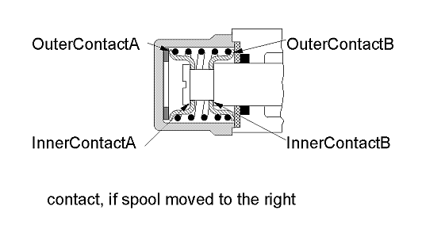
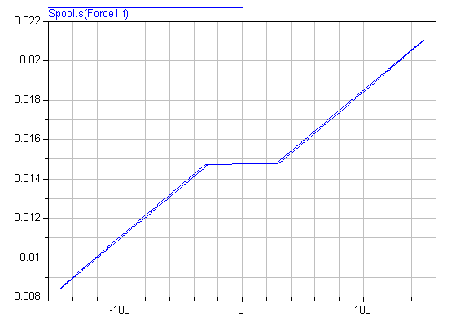

Demonstration examples of the components of this package
This package contains example models to demonstrate the usage of the Translational package. Open the models and simulate them according to the provided description in the models.
Extends from Modelica.Icons.ExamplesPackage (Icon for packages containing runnable examples).
| Name | Description |
|---|---|
| Examples for the used sign conventions. | |
| Setting of initial conditions | |
| Use of arrows in Mechanics.Translational | |
| Use of model accelerate. | |
| Use of damper models. | |
| Oscillator demonstrates the use of initial conditions. | |
| Sensors for translational systems. | |
| Use of model Stop | |
| Preload of a spool using ElastoGap models. | |
| Demonstrate usage of ElastoGap | |
| Demonstrate braking of a translational moving mass | |
| Demonstrate the modeling of heat losses | |
| Utility classes used by the Example models |
 Modelica.Mechanics.Translational.Examples.SignConvention
Modelica.Mechanics.Translational.Examples.SignConventionExamples for the used sign conventions.
If all arrows point in the same direction a positive force results in a positive acceleration a, velocity v and position s.
For a force of 1 N and a mass of 1 Kg this leads to
a = 1 m/s2
v = 1 m/s after 1 s (SlidingMass1.v)
s = 0.5 m after 1 s (SlidingMass1.s)
The acceleration is not available for plotting.
System 1) and 2) are equivalent. It doesn't matter whether the force pushes at flange_a in system 1 or pulls at flange_b in system 2.
It is of course possible to ignore the arrows and connect the models in an arbitrary way. But then it is hard see in what direction the force acts.
In the third system the two arrows are opposed which means that the force acts in the opposite direction (in the same direction as in the two other examples).
Extends from Modelica.Icons.Example (Icon for runnable examples).
Modelica.Mechanics.Translational.Examples.InitialConditionsSetting of initial conditions
There are several ways to set initial conditions. In the first system the position of the mass m3 was defined by using the modifier s(start=4.5), the position of m4 by s(start=12.5). These positions were chosen such that the system is a rest. To calculate these values start at the left (Fixed1) with a value of 1 m. The spring has an unstretched length of 2 m and m3 an length of 3 m, which leads to
1 m (fixed1)
+ 2 m (spring s2)
+ 3/2 m (half of the length of mass m3)
-------
4,5 m = s(start = 4.5) for m3
+ 3/2 m (half of the length of mass m3)
+ 4 m (springDamper 2)
+ 5/2 m (half of length of mass m4)
-------
12,5 m = s(start = 12.5) for m4
This selection of initial conditions has the effect that Dymola selects those variables (m3.s and m4.s) as state variables. In the second example the length of the springs are given as start values but they cannot be used as state for pure springs (only for the spring/damper combination). In this case the system is not at rest.

Extends from Modelica.Icons.Example (Icon for runnable examples).
Modelica.Mechanics.Translational.Examples.WhyArrowsUse of arrows in Mechanics.Translational
When using the models of the translational sublibrary it is recommended to make sure that all arrows point in the same direction because then all component have the same reference system. In the example the distance from flange_a of Rod1 to flange_b of Rod2 is 2 m. The distance from flange_a of Rod1 to flange_b of Rod3 is also 2 m though it is difficult to see that. Without the arrows it would be almost impossible to notice. That all arrows point in the same direction is a sufficient condition for an easy use of the library. There are cases where horizontally flipped models can be used without problems.
Extends from Modelica.Icons.Example (Icon for runnable examples).
Modelica.Mechanics.Translational.Examples.AccelerateUse of model accelerate.
Demonstrate usage of component Sources.Accelerate by moving a massing with a predefined acceleration.
Extends from Modelica.Icons.Example (Icon for runnable examples).
Modelica.Mechanics.Translational.Examples.DamperUse of damper models.
Demonstrate usage of damper components in different variants.
Extends from Modelica.Icons.Example (Icon for runnable examples).
Modelica.Mechanics.Translational.Examples.OscillatorOscillator demonstrates the use of initial conditions.
A spring - mass system is a mechanical oscillator. If no damping is included and the system is excited at resonance frequency infinite amplitudes will result. The resonant frequency is given by omega_res = sqrt(c / m) with:
c spring stiffness
m mass
To make sure that the system is initially at rest the initial conditions s(start=0) and v(start=0) for the SlidingMass are set. If damping is added the amplitudes are bounded.
Extends from Modelica.Icons.Example (Icon for runnable examples).
Modelica.Mechanics.Translational.Examples.SensorsSensors for translational systems.
These sensors measure
force f in N position s in m velocity v in m/s acceleration a in m/s2
The measured velocity and acceleration is independent on the flange the sensor is connected to. The position depends on the flange (flange_a or flange_b) and the length L of the component. Plot PositionSensor1.s, PositionSensor2.s and SlidingMass1.s to see the difference.
Extends from Modelica.Icons.Example (Icon for runnable examples).
Modelica.Mechanics.Translational.Examples.FrictionUse of model Stop
Extends from Modelica.Icons.Example (Icon for runnable examples).
Modelica.Mechanics.Translational.Examples.PreLoadPreload of a spool using ElastoGap models.
When designing hydraulic valves it is often necessary to hold the spool in a certain position as long as an external force is below a threshold value. If this force exceeds the threshold value a linear relation between force and position is desired. There are designs that need only one spring to accomplish this task. Using the ElastoGap elements this design can be modelled easily. Drawing of spool.



Spool position s as a function of working force f.

Extends from Modelica.Icons.Example (Icon for runnable examples).
Modelica.Mechanics.Translational.Examples.ElastoGapDemonstrate usage of ElastoGap
This model demonstrates the effect of ElastoGaps on eigenfrequency:
Plot mass1.s and mass2.s as well as mass1.v and mass2.v
mass1 is moved by both spring forces all the time.
Since elastoGap1 lifts off at s > -0.5 m and elastoGap2 lifts off s < +0.5 m,
mass2 moves freely as long as -0.5 m < s < +0.5 m.
Extends from Modelica.Icons.Example (Icon for runnable examples).
| Name | Description |
|---|---|
| d | Damping constant [N.s/m] |
Modelica.Mechanics.Translational.Examples.BrakeDemonstrate braking of a translational moving mass
This model consists of a mass with an initial velocity of 1 m/s. After 0.1 s, a brake is activated and it is shown that the mass decelerates until it arrives at rest and remains at rest. Two versions of this system are present, one where the brake is implicitly grounded and one where it is explicitly grounded.
Extends from Modelica.Icons.Example (Icon for runnable examples).
Modelica.Mechanics.Translational.Examples.HeatLossesDemonstrate the modeling of heat losses
This model demonstrates how to model the dissipated power of a Translational model, by enabling the heatPort of all components and connecting these heatPorts via a convection element to the environment. The total heat flow generated by the elements and transported to the environment is present in variable convection.fluid.
Extends from Modelica.Icons.Example (Icon for runnable examples).
Automatically generated Fri Oct 02 11:08:16 2015.